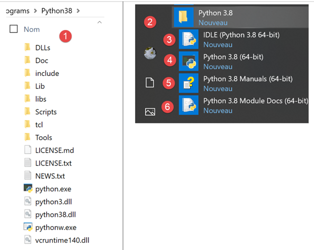
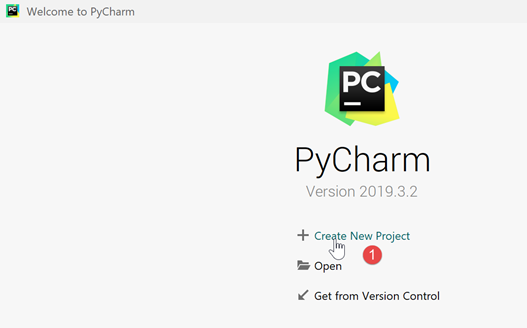
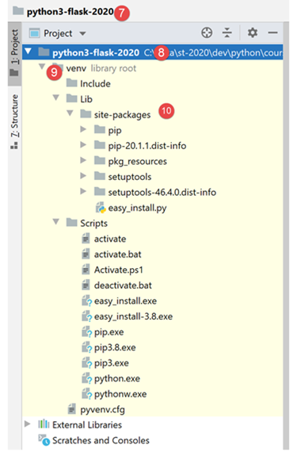
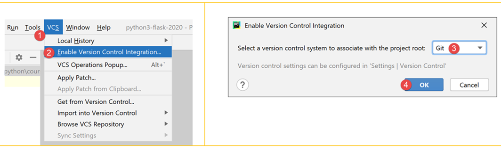
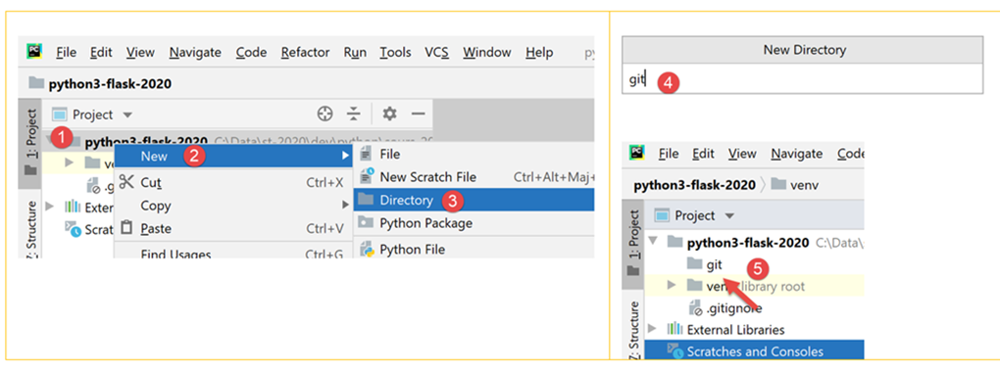
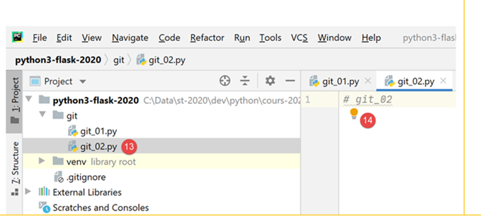
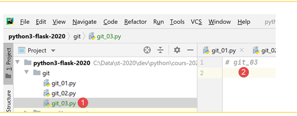
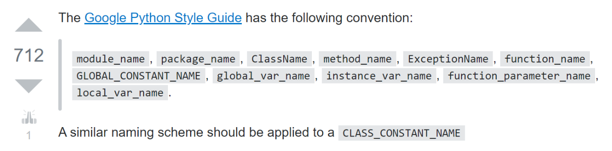

2. Configurar um ambiente de desenvolvimento
2.1. Python 3.8.1
Os exemplos neste documento foram testados com o interpretador Python 3.8.1 disponível no URL |https://www.python.org/downloads/| (fevereiro de 2020) numa máquina com Windows 10:

A instalação do Python cria o diretório de ficheiros [1] e o menu [2] na lista de programas:

- [3-4]: dois interpretadores Python interativos;
- [5]: documentação do Python;
- [6]: documentação dos módulos Python;
Não iremos utilizar o interpretador Python interativo. É simplesmente importante saber que os scripts neste documento podem ser executados utilizando este interpretador. Embora seja útil para testar o funcionamento de uma funcionalidade do Python, não é muito prático para scripts que precisam de ser reutilizados. Aqui está um exemplo utilizando a opção [4] acima:

O prompt >>> permite-lhe introduzir uma instrução Python que é executada imediatamente. O código digitado acima tem o seguinte significado:
Linhas:
- 1: Inicialização de uma variável. Em Python, não se declara o tipo das variáveis. Estas assumem automaticamente o tipo do valor que lhes é atribuído. Este tipo pode mudar ao longo do tempo;
- 2: exibição do nome. «name=%s» é um formato de exibição em que %s é um parâmetro formal que denota uma cadeia de caracteres. name é o parâmetro real que será exibido no lugar de %s;
- 3: o resultado da exibição;
- 4: exibição do tipo da variável name;
- 5: A variável name é do tipo class aqui. No Python 2.7, teria o valor <type 'str'>;
Agora, vamos abrir uma consola do Windows:

O facto de termos conseguido digitar [python] em [1] e de o executável [python.exe] ter sido encontrado mostra que ele está no PATH da máquina Windows. Isto é importante porque significa que as ferramentas de desenvolvimento Python serão capazes de encontrar o interpretador Python. Podemos verificar isto da seguinte forma:

- em [2], saímos do interpretador Python;
- em [3], o comando que exibe o PATH para executáveis na máquina Windows;
- em [4], vemos que a pasta do interpretador Python 3.8 faz parte do PATH;
2.2. O IDE PyCharm Community
2.2.1. Introdução
Para compilar e executar os scripts deste documento, utilizámos o editor [PyCharm] Community Edition, disponível (fevereiro de 2020) no URL |https://www.jetbrains.com/fr-fr/pycharm/download/#section=windows|:

Descarregue o IDE PyCharm Community [1-3] e instale-o.
Inicie o IDE PyCharm e crie o seu primeiro projeto Python:


- Nos passos [2-4], crie um novo projeto;
O IDE PyCharm apresenta o projeto criado da seguinte forma:

- Em [2-3], vamos examinar as propriedades do IDE;

- em [4], o interpretador Python que será utilizado para o projeto;
- em [5], uma lista suspensa dos interpretadores disponíveis;
- Em [6], selecione o interpretador descarregado na secção |Python 3.8.1|;

- em [7], o interpretador selecionado;
- em [8], a lista de pacotes disponíveis com este interpretador. Os pacotes contêm módulos que os scripts Python podem utilizar. Existem centenas de módulos disponíveis;
Vamos começar por criar uma pasta onde colocaremos o nosso primeiro script Python:

- Clique com o botão direito do rato no projeto e, em seguida, em [1-2] para criar uma pasta;
- Em [3], digite o nome da pasta: ela será criada na pasta do projeto;
A seguir, vamos criar um script Python:

- Clique com o botão direito do rato na pasta [bases] e, em seguida, em [1-3];
- Em [4-5], introduza o nome do script;
Vamos escrever o nosso primeiro script:

- Em [3], escrevemos o seguinte script:
- linhas 1, 3: os comentários começam com o símbolo #;
- linha 2: inicialização de uma variável. O Python não declara o tipo das suas variáveis;
- linha 4: saída para o ecrã. A sintaxe utilizada aqui é [formato % dados] com:
- formato: nome=%s, onde %s denota o espaço reservado para uma cadeia de caracteres. Esta cadeia de caracteres será encontrada na parte [dados] da expressão;
- dados: o valor da variável [nome] substituirá o espaço reservado %s na string de formato;
- Com [4-5], reformatamos o código de acordo com as recomendações do órgão regulador do Python;
O script é executado clicando com o botão direito do rato no código [6]:

- em [7], o comando executado;
- em [8], o resultado da execução;
Para executar o script no documento, descarregue o código a partir do URL |https://tahe.developpez.com/tutoriels-cours/python-flask-2020/documents/python-flask-2020.rar| e, em seguida, proceda da seguinte forma no PyCharm:

- em [1-2], abra um projeto existente: selecione a pasta que contém o código descarregado;
- em [3], o projeto está aberto;
- em [4-5], execute um dos scripts do projeto;

- em [7-8], os resultados da execução;
2.2.2. Ambiente de execução virtual
O nosso ambiente de trabalho já está a funcionar. No entanto, vamos modificá-lo para escrever os scripts para este curso. Primeiro, vamos alterar a configuração do PyCharm:

Na janela à direita:
- Por predefinição, a caixa [1] está marcada. Desmarque-a para que o PyCharm não abra o último projeto por predefinição, mas nos permita escolher qual abrir;
- Em [2], não confirmamos a saída do PyCharm ao fechar a janela da aplicação;
- Em [3], os novos projetos abrem numa janela separada;
- em [4], se fechar o PyCharm enquanto um programa estiver a ser executado, este será interrompido;
Agora vamos fechar o PyCharm e reabri-lo:

- Em [1], crie um novo projeto;
- Em [2], especifique a pasta do projeto;
- Em [3], selecione um ambiente virtual. Um ambiente virtual é específico do projeto que está a criar. Não se mistura com os ambientes virtuais de outros projetos. Um projeto Python/Flask utiliza muitas bibliotecas externas que devem ser instaladas. O projeto P1 pode utilizar a biblioteca B na versão v1, e o projeto P2 pode utilizar a mesma biblioteca B, mas na versão v2. Estas duas versões podem ser mais ou menos compatíveis. No entanto, quando instala uma biblioteca na versão v2 e a versão v1 já está instalada, a versão v1 é substituída pela versão v2. Isto pode ser problemático para o projeto que estava a utilizar a versão v1, caso a nova versão v2 não seja totalmente compatível com a versão v1. Para evitar estes problemas, cada projeto é isolado num ambiente virtual;
- em [4], especifique a pasta onde serão armazenadas as bibliotecas Python descarregadas durante o projeto. Aqui, escolhemos uma pasta [venv] (ambiente virtual) dentro da pasta do projeto. Não é obrigatório fazer isto;
- em [5], o interpretador Python do projeto. Este é o que instalámos no passo anterior;
- em [6], crie o projeto;

- em [7-8], o projeto criado;
- em [9], o ambiente de execução do projeto, chamado de ambiente virtual;
- em [10], a pasta [site-packages] é onde as bibliotecas descarregadas posteriormente serão armazenadas;
2.2.3. Git
Em seguida, ativamos um sistema de controlo de versões. Aqui, vamos usar o Git [1-4]:

Um sistema de controlo de versões (VCS) permite-lhe acompanhar as alterações num projeto. Pode-se criar instantâneos, através de uma operação chamada commit, do projeto em diferentes momentos do seu ciclo de vida. Se fizer dois commits nos momentos T e T+1, o VCS permite ver o que mudou entre as duas versões submetidas. Normalmente, o VCS é utilizado por uma equipa de programadores. Estes submetem o seu código depois de este ter sido exaustivamente testado. A partir do VCS, outros programadores podem recuperar este código validado e utilizá-lo.
Aqui, há apenas um programador. A experiência mostra que uma aplicação pode funcionar no momento T, mas deixar de funcionar no momento T+1. Nesse caso, gostaríamos de voltar ao momento T para recomeçar do zero. O VCS permite isso, e é por isso que o iremos utilizar aqui.
Vamos mostrar-lhe como fazer isto com o Git.

- Em [1], selecione o separador [Git] (canto inferior esquerdo);
- em [2], pode ver que existem 495 ficheiros de projeto que não estão versionados pelo Git. Isto significa que não serão incluídos no instantâneo do projeto durante os commits;
- em [3], o botão [commit] ou o botão de validação do projeto. Conforme mencionado, o Git tira então um instantâneo do projeto e armazena-o numa pasta [.git] na raiz do projeto (não exibida pelo PyCharm, mas visível no Explorador do Windows);
Vamos fazer o commit [3] do projeto no seu estado atual.
- Em [4], a lista de ficheiros sem versão;
- em [5], todos estes ficheiros sem versão pertencem ao ambiente virtual [venv];
- Em [6], cada commit deve ser acompanhado por uma mensagem. Aqui, o programador descreve as alterações introduzidas pela versão a ser submetida, em comparação com a última versão submetida;
Certas pastas ou ficheiros podem ser ignorados pelo Git. Nesse caso, nunca são incluídos no instantâneo. Em [5] acima, clique com o botão direito do rato na pasta [venv].
- Em [1-3], especificamos que a pasta [venv] não deve ser incluída nos instantâneos do Git. A lista de pastas e ficheiros ignorados pelo Git é armazenada num ficheiro chamado [.gitignore] [4];


- Após o passo anterior, todos os ficheiros na pasta [venv] desaparecem da lista de ficheiros não versionados. Apenas o ficheiro [.gitignore] que acabou de ser criado permanece;
- Em [5], selecionamo-lo para que seja guardado;
- Em [6], criamos uma mensagem de commit:
- em [7], confirmamos. É então tirado um instantâneo do projeto;

- em [8-9], o conteúdo do ficheiro [.gitignore]: uma única linha com o nome da pasta [/venv], indicando que o seu conteúdo deve ser ignorado nos instantâneos;
Agora vamos ver como o Git pode ser útil. Primeiro, criamos uma pasta [git] (pode usar qualquer outro nome — pode ser apagada no final da demonstração):

- em [1-5], criamos uma pasta [git];

- em [6-10], criamos um script Python [git_01];

- em [11-12], o script contém apenas um comentário;
- Em [13-14], crie uma cópia de [git_01]. Para tal, selecione [git_01], prima Ctrl-C (Copiar), depois Ctrl-V (Colar) e introduza [git_02] como nome do ficheiro;

Agora, vamos fazer o commit do nosso projeto. Será criada uma instantânea dos dois ficheiros [git_01, git_02];

- Em [1-3], faça o commit do projeto;
- Em [4], selecione os ficheiros sem versão que pretende submeter — neste caso, todos eles;
- Em [5], introduza a mensagem de commit;
- Em [6], confirmamos;

- em [1-2], confirme o commit;
- em [3], selecione o separador [Log];
- Em [4], uma visualização dos ramos do projeto. Aqui, existe apenas um ramo chamado [master];
- em [5-6], o commit que acabou de ser feito;
Agora vamos criar um script [git_03] da mesma forma:

Modifique o script [git_02] e elimine o script [git_01]:

Em seguida, faça o commit da nova versão:

Agora temos dois commits nos registos:

Quando seleciona um commit específico, a árvore de ficheiros do projeto aparece à sua direita:

Suponhamos agora que o último commit nos tenha levado a um beco sem saída e que queiramos reverter para um estado correspondente a um dos commits anteriores:

- Em [1-2], selecione o commit para o qual deseja reverter;
- em [3-5], existem vários modos de redefinição. Escolhemos o modo [hard], que reverte para o estado selecionado, descartando as alterações feitas desde então;

- em [6], recuperámos [git_01], que tinha sido eliminado;
- em [7-8], encontramos [git_02] no seu estado original, sem a modificação que tinha sido feita;
Agora, vamos modificar [git_02] e adicionar [git_03] [1-4]:

Agora, vamos repetir o processo de reverter para o commit inicial:

- em [1-4], voltamos ao instantâneo do commit n.º 1;
- Em [5-6], escolhemos a opção [Keep] em vez de [Hard]. Estas opções não são fáceis de compreender. Por isso, precisamos de as experimentar:
 |  |
- em [1], o ficheiro [git_03] ainda está lá;
- em [2-3], o ficheiro [git_02] manteve as suas alterações;
É difícil perceber o que esta opção [Revert Commit] fez. Agora, vamos fazer o commit do estado atual:

- Em [1-6], o commit;

- em [9], vemos o novo commit;
Agora, vamos tentar voltar ao commit 1, tal como fizemos anteriormente:
 |  |
- em [1-6], revertemos para o commit #1 no modo [Hard];

- em [7-8], desta vez perdemos efetivamente todas as alterações feitas desde o primeiro commit;
A partir daqui, não voltaremos a abordar o [Git]. O leitor pode prosseguir da seguinte forma:
- pode seguir os exemplos fornecidos, quer digitando-os manualmente, quer descarregando-os do site do curso;
- sempre que um exemplo funcionar, pode fazer o commit do seu projeto;
- ao desenvolver o seu próprio código e chegar a um beco sem saída, sabe que pode regressar a um estado estável revertendo para um commit anterior;
2.3. Convenções de codificação em Python
Pode escrever código Python sem seguir as convenções de codificação, e este continuará a funcionar. Mas poderá não ser bem visto pela comunidade Python, que estabeleceu convenções de codificação. Estas estão resumidas numa publicação em |https://stackoverflow.com/questions/159720/what-is-the-naming-convention-in-python-for-variable-and-function-names|:

- o nome de um módulo (module_name) segue uma convenção por vezes chamada [snake_case]: tudo em minúsculas, com palavras separadas por sublinhados, se necessário. Esta convenção [snake_case] aplica-se aos nomes de métodos, pacotes, variáveis e funções;
- o nome de uma classe (ClassName) segue uma convenção por vezes chamada [PascalCase]: uma sequência de palavras unidas, com a primeira letra de cada palavra em maiúscula;
- Os nomes das constantes seguem a convenção [SNAKE_CASE]: uma sequência de palavras com a primeira letra maiúscula, separadas por sublinhados;
Estas convenções foram, em geral, seguidas neste documento. No entanto, para módulos que definem uma classe, atribuí ao módulo o mesmo nome da classe que contém. Segue, portanto, a convenção [PascalCase] em vez de [snake_case]. Pretendia poder identificar rapidamente os módulos de classe.